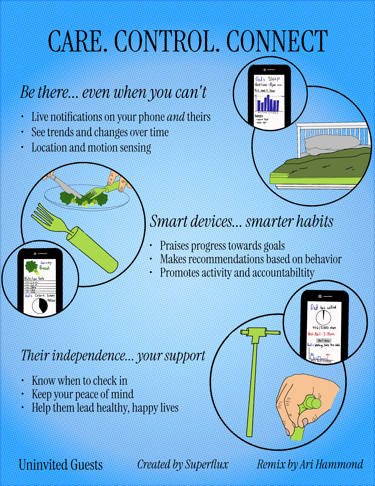
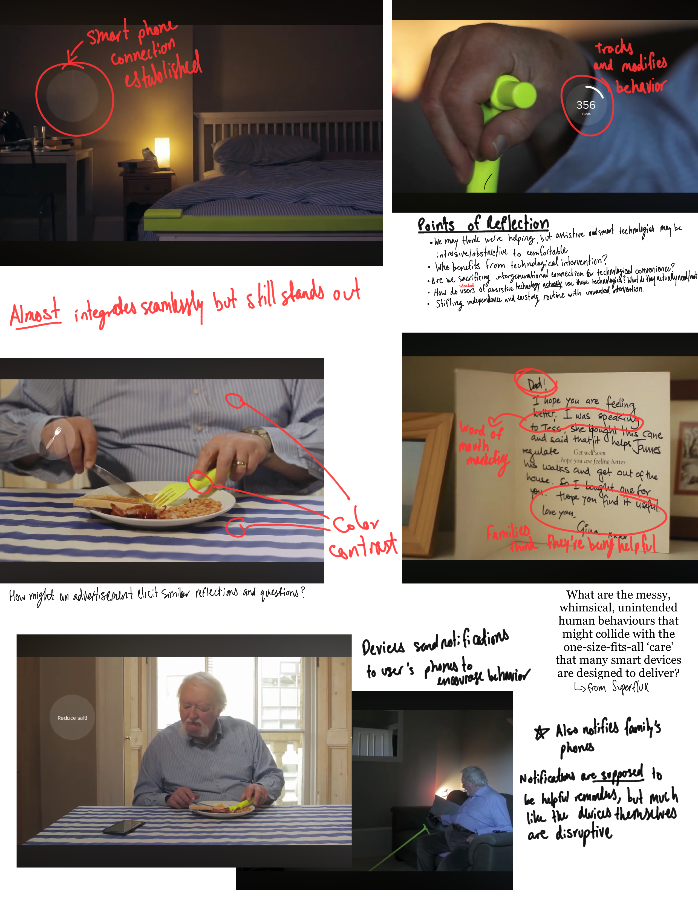
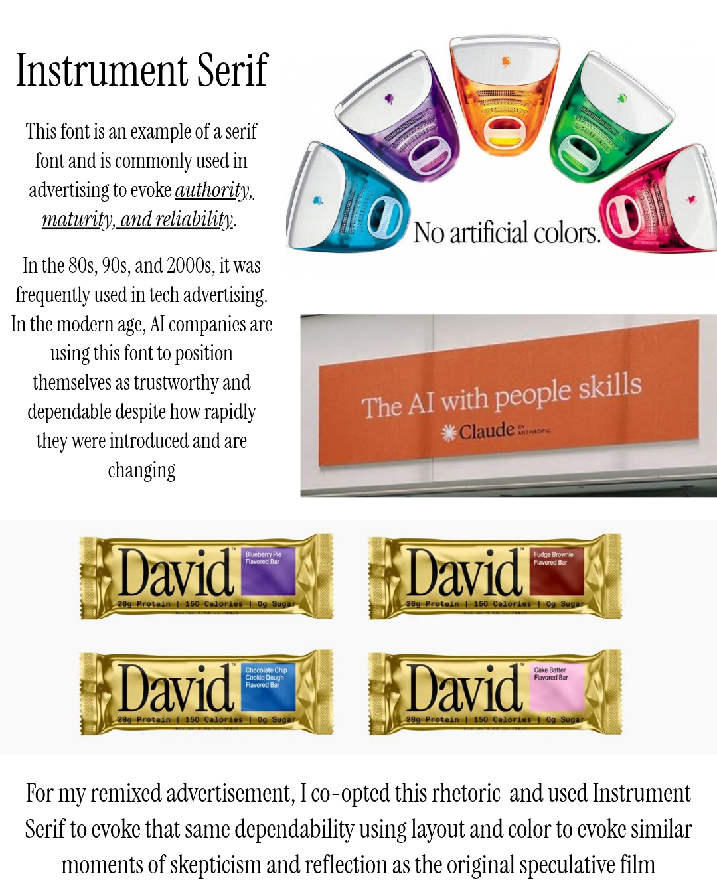
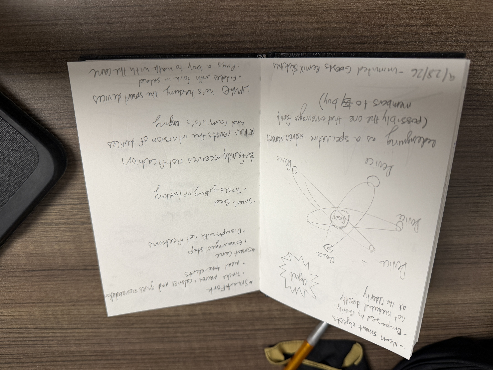
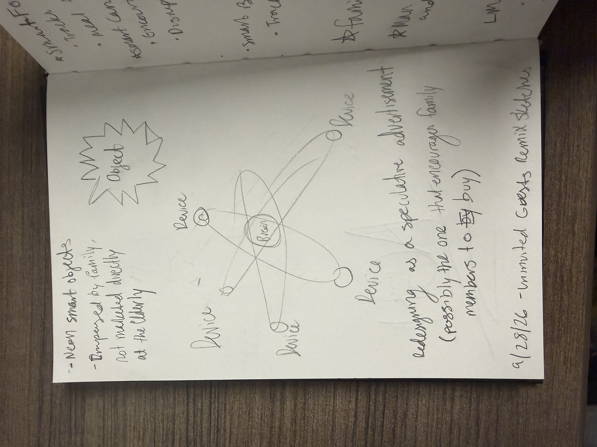
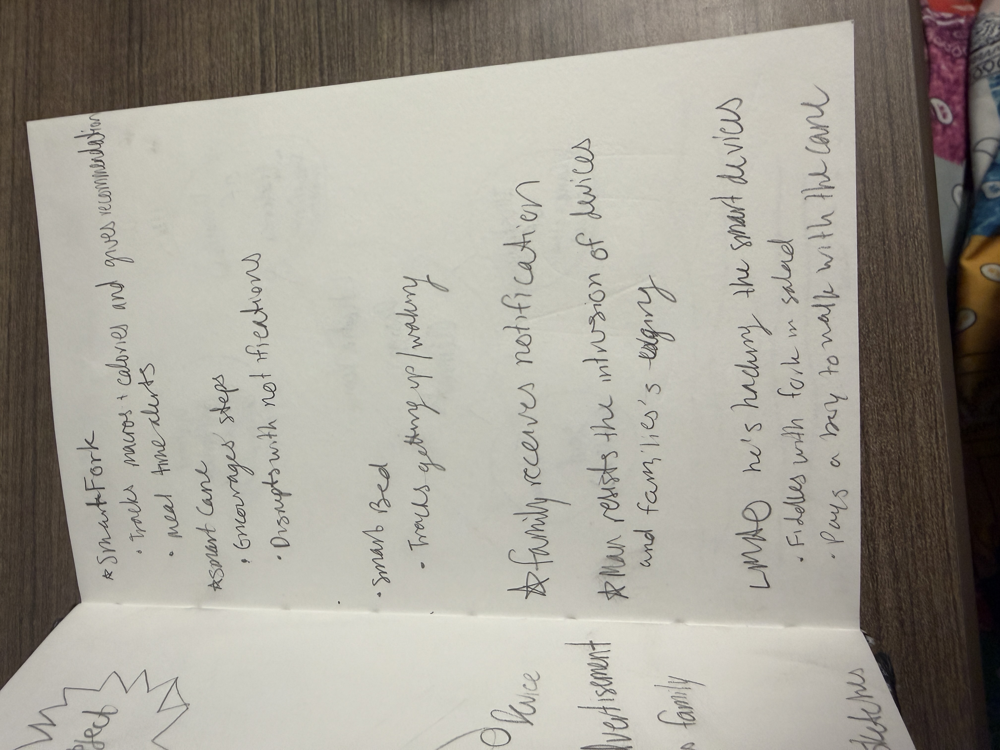
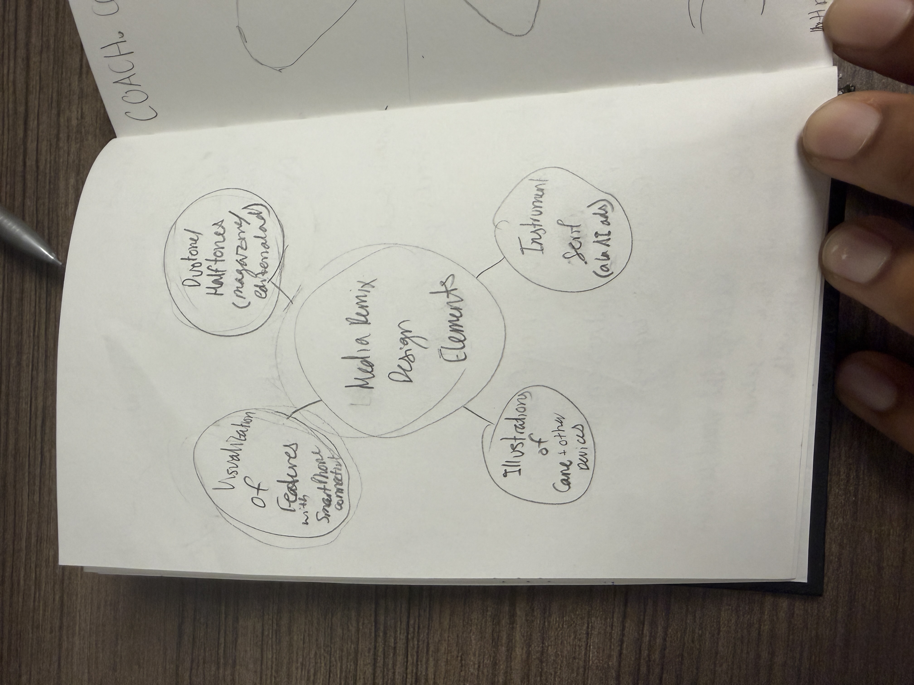
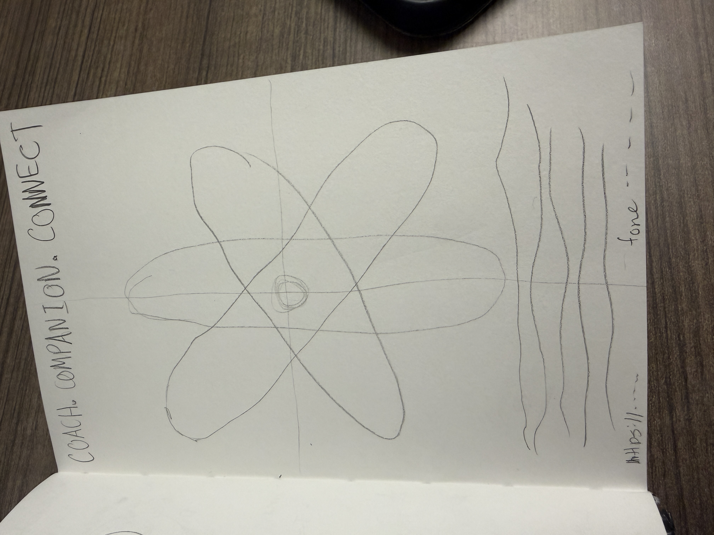
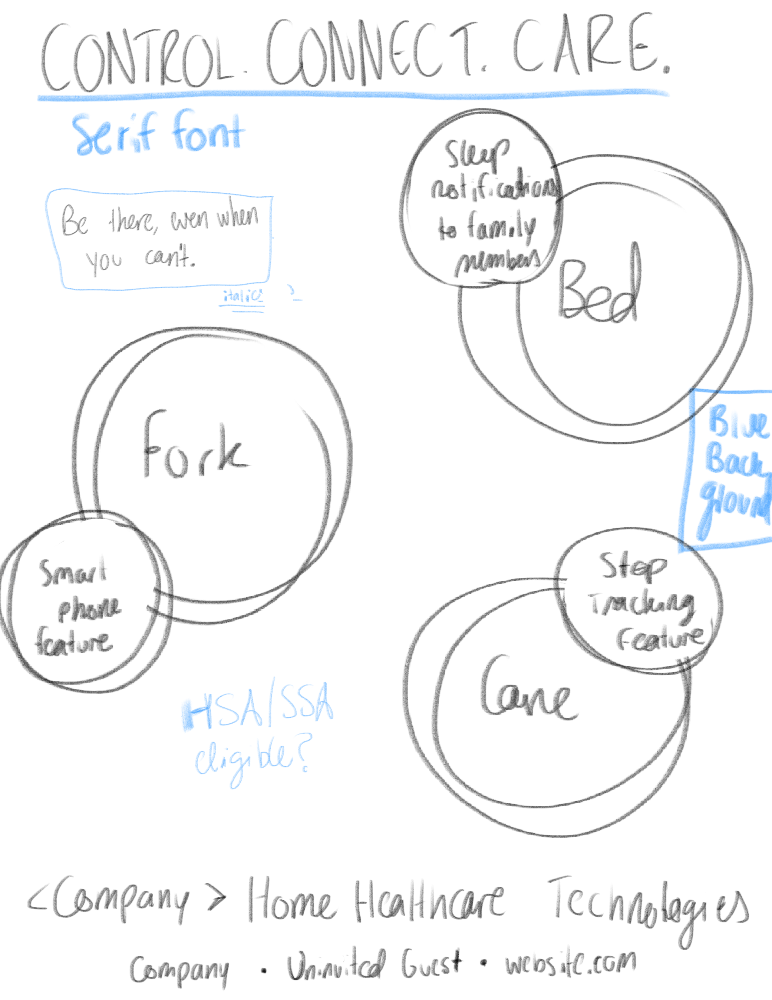

Transforming the Artifact
The Original: Uninvited Guest
The film is about 5 minutes long
Uninvited Guests is a critical futures and speculative design project created by Superflux Lab, "a boundary-defying, award-winning design and experiential futures company, as well as a research and art practice." It follows Thomas, a 70-year-old widower whose children have gifted him smart objects to help him build healthy habits and care for him from a distance. A "fiercely independent man," Thomas struggles with using structure superimposed on his routine and behaviors, and we see how he negotiates with the affordances of the technology to maintain his way of life. Fundamentally, the film asks the question: "In a world where ’smart objects’ will increasingly be used to provide care at a distance, how will we live with these uninvited guests?"
The Remix: Editorial Advertisement

Process








I began by watching and re-watching the film to distill its key themes, questions, and visual motifs. These notes included sketches, frame annotations, questions, comments and reflection; they helped establish the audience, perspective, and goal of my advertisement remix. I then did several explorations of assistive technology, AI, and editorial advertisements as design inspiration and to familiarize myself with genre conventions. Fonts and color schemes were most immediately influence by this exploration.
Click on Each Image to Enlarge
Rhetorical Reflection
In the film, an elderly man uses a number of neon smart products that his children purchased for him with the intent to help him keep himself healthy in his old age. At first he begrudgingly uses the objects, then abandons them entirely because of how they disrupt his routine, and finally, he begins "hacking" the objects. He rubs his smart fork in some salad while he eats fries; he hires a teenager to walk with the smart cane and pays him in beer, etc.
The film, created in 2015, was intended to elicit reflections and questions about human-technology interaction, how technologies disrupt or enhance existing human behaviors, how they influence and are influenced by human relationships, and, some argue, assistive technologies and the potential of co-designing with users to make products that fit more seamlessly into their lives. The film was able to encode these messages through sequencing of scenes, overlays to show cell phone interaction, cards from his children, and visual encoding of the smart objects as bulky and neon, signifying how out of place they feel in the man's life.
I chose to reimagine Uninvited Guests as an in-universe print/editorial advertisement for several reasons. First, fictional advertisements frequently used in speculative design to elicit reflections about how we design, produce, market, and consume technology as a commodity. To that end, the medium is well-suited for subliminal/implicit messaging, persuasion, and provocation necessary to present and convince an audience to consider explore a possible future.
Second, a print advertisement presented the challenge of consolidating the nuanced themes, questions, comedy, and visuals of a film into a singular frame. Where film is multimodal and can leverage sound, light, sequencing, and cinematography to convey a message, print is limited to image and text. Thus, it forced me to deeply consider the message in the original medium to best translate it into this truncated format. Approaching this challenge forced me to grasp the nuances of the film's message, audience, and intent, allowing me to more fully consider connections to course readings like "Encoding/Decoding." Finally, I thought a print advertisement would be a novel and distinctive piece in my portfolio and force me to experiment in design software to best achieve my goal.
From my familiarization with the genre, I pulled color palettes, visual layouts, and phrasing. Instrument Serif font and a blue-green color scheme are common across modern technology advertisements and created a more cohesive basis for the text and visual components of the print advertisements. By framing the features of the technology as beneficial and disruptive, I used the affordances of text in print advertising to provide language with which the audience may discuss or reflect. Phrases like “their independence…your support,” and “be there…even when you can’t,” are designed to give pause and make audiences ask how these technologies and the people who buy them for their loved ones may encroach on those loved ones’ autonomy. The alliterative header, “CARE. CONTROL. CONNECT.”, mirror language from advertisements like LifeAlert where caregivers seek some element of control in how the intervene in their patients/family members’ lives. I made sure to use language that conveyed a desire to help, intervene, or assist while also implying unwanted intervention or imposition. Though it comes from a place of care and a desire to maintain a connection, it may be received as more authoritarian or annoying.
The most difficult part was translating the visual and narrative elements of the film to a single page advertisement. Primarily, I relied on the more striking visual frames and translating the smartphone overlays to overlapping circles with graphics. Though the text conveyed the implied themes and questions, the sequencing and content of the visual elements of the film were somewhat lost in translation. I focused on closeup action shots that showed how the technologies would be used, and connected that to the verbiage I used in the advertisements. I decided to illustrate them in Procreate rather than editing Photoshop because it felt like a more personal approach. In hindsight, Photoshop would have significantly improved the quality of the final advertisement, but this experiment in digital art was better under the time constraints and helped me further challenge myself, which was a significant personal goal for this project.
If I could continue developing the project, I would want to take more time to refine my illustrations and learn the features of Affinity, the design software I used for this project to create a more polished and plausible advertisement. As it stand, I am happy with what I was able to achieve with gradients and halftone filters, but realistic grounding is crucial to evoking reflection and skepticism in speculative design. Thus, creating an advertisement could reasonably be featured in a publication would help convey the intended message and prompt the desired discussion.